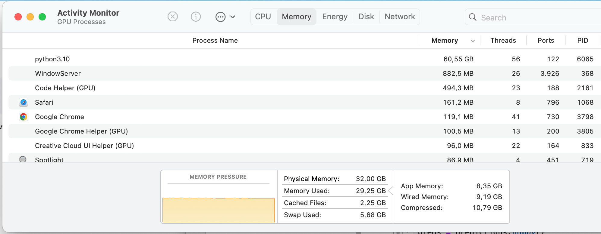

Running Fast.AI / Huggingface Transformers on Apple Silicon
ml
fast.ai
apple
hugging face
Author
Christian Wittmann
Published
January 5, 2024
In my previous blog post, I described how I setup my Fast.AI development environment on Apple Silicon. In this one, let me share my experience running some notebooks on Apple Silicon. I focus on what needed to be done to adjust the notebooks to Apple Silicon (spoiler alert: it is not difficult) and I also share some performance indications how well Apple Silicon performs.
I have revisited 2 projects I have worked on before, and I ported them to Apple Silicon:
Before we jump into these 2 use cases, let’s look at how to detect Apple Silicon. We need to do this because we need to do minor optimizations in both notebooks so that they run at all / with the GPU.
For using the the GPUs, there is the so-called Metal Performance Shaders framework, abbreviated MPS. To be able to access MPS, you need to have a pytorch version of at least 1.12.
Stating what probably is obvious but for completeness: NVIDIA acceleration, the other way of GPU acceleration, is abbreviated with CUDA (Compute Unified Device Architecture), and we can see it being mentioned in the code side-by-side frequently.
So let’s check the requirements:
import torchprint(f"Pytorch is running on version {torch.__version__}")if torch.backends.mps.is_available():print ("MPS device found.") mps_device = torch.device("mps")else:print ("MPS device not found.")
Pytorch is running on version 2.1.1
MPS device found.
Fast.AI also provides a function for checking the available devices called default_device() which returns a torch.device object. Calling it without a parameter, i.e. -1 detects the device. Calling it with True forces it to return a cuda/mps-object, and calling it with False forces it to return a cpu-object.
from fastai.vision.allimport*device = default_device()print(device)
mps
MNIST on Fast.AI
I was looking for a fairly (but not too) compute intensive initial project to try out the performance of my MacBook, and I ended up at the “hello world” of machine learning 😉.
Working on MNIST, I had built a baseline-notebook which takes the Fast.AI-version of the MNIST dataset (i.e. using images), creates a model and runs predictions, pretty much with lots of boilerplate.
Afterwards, the training leverages the GPU, and it performed quite well, similar to a free Paperspace instance I had used before. Here are some training times I collected:
The link on the total time leads to a screenshots showing the detailed training times.
If not incited otherwise, the training was done in Jupyter Labs.
Takeaways:
I was surprised to see that there was a difference in running the code in Jupyter Lab vs. in VS Code. For more complex tasks, Jupyter Labs seems to be the runtime environment of choice (but for editing I like VS Code better).
The M2 Max performs comparably to a free Paperspace GPU. Honestly, I am not super-impressed with this result, because 6 years in hardware development (between the Surface and the M2 Max) should have yielded much better results, so I suspect there are some inefficiencies somewhere.
M3 Pro is even worse. The result is so bad, that it is hard to believe, even if M3 Pro is the lesser processor compared to M2 Max.
Adding more computation by adding in the squish transformation highlights to true relation of performance, M2 Max hardly slows down, but my old Surface Pro needed almost 5 hours for the task, which underlines the suspicion that there are some inefficiencies hidden when the overall computational load is low.
Natural Language Processing with Disaster Tweets on Huggingface transformers
Regarding code, Apple Silicon (i.e. MPS - Metal Performance Shaders) apparently does not support FP16 (16-bit floating-point), therefore, the parameter fp16 needs to be passed as False to the TrainingArguments. For generic detection of the parameter:
import torchfp16_available =Trueif torch.backends.mps.is_available(): fp16_available =Falseprint(f"FP16 is available: {fp16_available}")
FP16 is available: False
Additionally, I needed to adjust the memory management, because the model ran out of memory: RuntimeError: MPS backend out of memory (MPS allocated: 7.18 GB, other allocations: 28.82 GB, max allowed: 36.27 GB). Tried to allocate 500.39 MB on private pool. Use PYTORCH_MPS_HIGH_WATERMARK_RATIO=0.0 to disable upper limit for memory allocations (may cause system failure).
PYTORCH_MPS_HIGH_WATERMARK_RATIO is an environment variable related to PyTorch’s memory management when using the MPS. It sets the ratio of the total GPU memory that PyTorch is allowed to allocate when using MPS. The ratio is expressed as a decimal fraction of the total available GPU memory. For example, 0.8 means that PyTorch is allowed to use 80% of the GPU memory. By setting PYTORCH_MPS_HIGH_WATERMARK_RATIO=0.0 PyTorch does not have an upper limit on memory allocations for MPS operations. This means PyTorch can potentially use all available GPU memory for its computations.
Setting this parameter needs to be done before running any PyTorch code, so I put it into the very first cells of my notebook. Let’s check the parameter first:
import oshigh_watermark_ratio = os.getenv('PYTORCH_MPS_HIGH_WATERMARK_RATIO')if high_watermark_ratio isnotNone:print(f"PYTORCH_MPS_HIGH_WATERMARK_RATIO is set to: {high_watermark_ratio}")else:print("PYTORCH_MPS_HIGH_WATERMARK_RATIO is not set (using default behavior).")
PYTORCH_MPS_HIGH_WATERMARK_RATIO is not set (using default behavior).
As a result, the notebook ran to the end! It took about 1 hour (compared to about 20 minutes on Huggingface), and it resulted in heavy memory usage of up to 60GB (even though I have only 32GB of physical memory):

Memory Usage
I am not quite sure how to make of this heavy usage, especially since only about 5GB were swapped, so it does not really add up to me… Nonetheless, it worked!
Before closing: Yes, there would be other ways to try to optimize the memory usage (like gradient accumulation), but the goal here was to stay as close to the original code as possible.
Overall conclusion
It is always nice to be able to run things on out own machine. But overall, the performance is not as good as even the free versions of Paperspace or Kaggle.
Nonetheless, I would attribute some convenience to being able to work locally in terms of setup, being in a known environment, being able to work traveling. Additionally, more capable laptops are becoming ubiquitous than ever, so if you have one, why not use it? Especially for playing with smaller models, it makes lots of sense to me, and for bigger models, you can always easily shift to an online service.
Again, there are tradeoffs and it depends on personal taste. What’s your take on this? Do you prefer to work on your laptop or your preferred online environment?
{kind=link}
{kind=link}
{kind=link}
{kind=link}
{kind=link}
{kind=link}